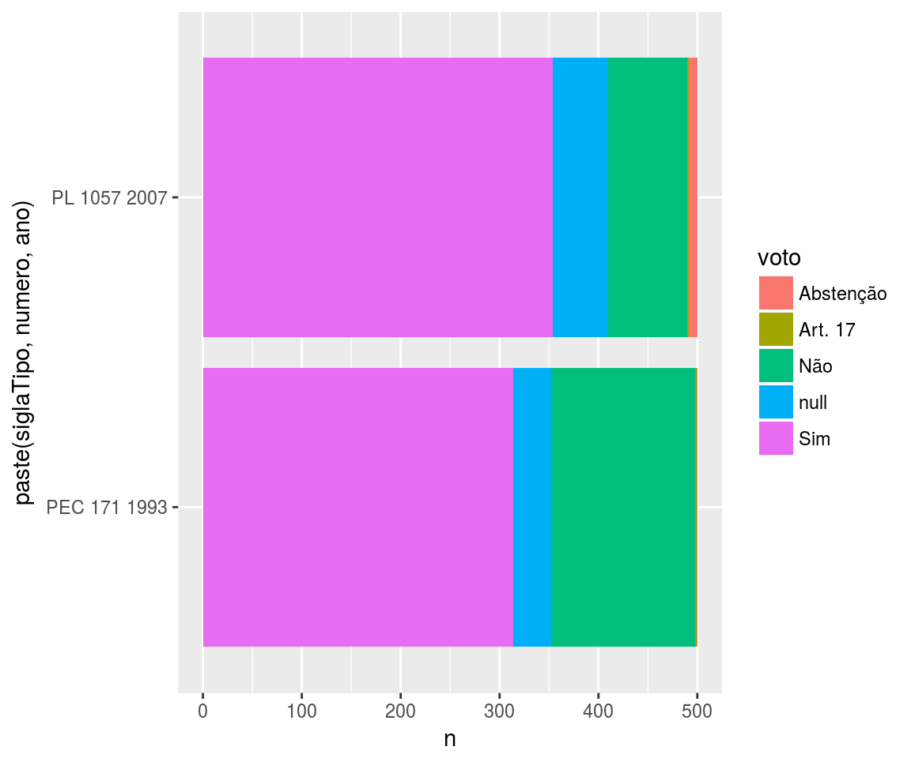
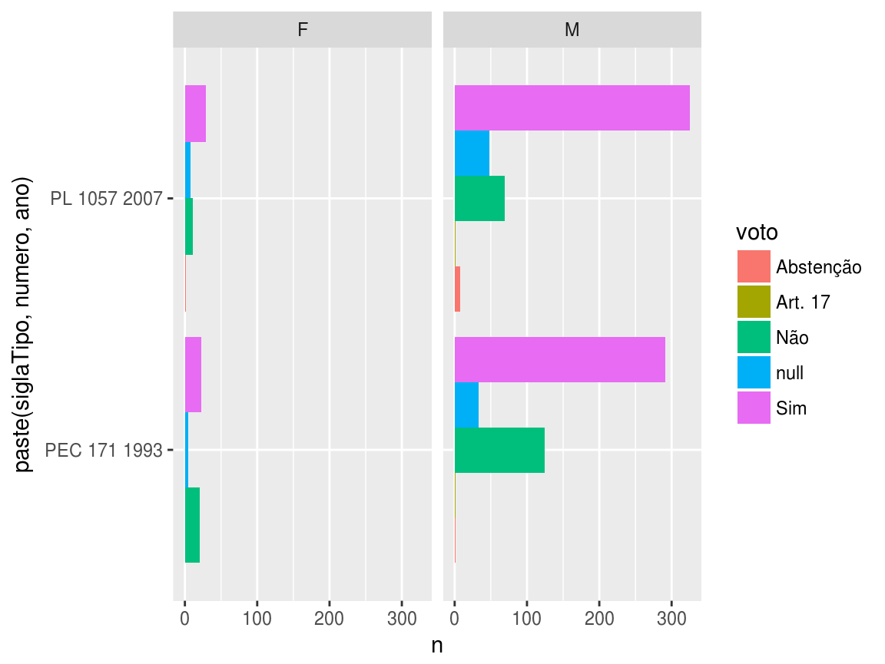

library(rcongresso)
library(dplyr)
library(tidyr)
library(purrr)
library(ggplot2)A partir dos dados da proposição (ex: PEC 171 de 1993), são necessários dois passos: descobrir o id da proposição na API e recuperar os dados da proposição como dataframe.
proposicoes = frame_data(
~tipo, ~numero, ~ano,
"PEC", 171, 1993,
"PL", 1057, 2007
) %>%
pmap(fetch_id_proposicao) %>%
map_df(fetch_proposicao)
glimpse(proposicoes)## Observations: 2
## Variables: 14
## $ id <int> 14493, 351362
## $ uri <chr> "https://dadosabertos.camara.leg.br/api/v2/pr...
## $ siglaTipo <chr> "PEC", "PL"
## $ idTipo <int> 136, 139
## $ numero <int> 171, 1057
## $ ano <int> 1993, 2007
## $ ementa <chr> "Altera a redação do art. 228 da Constituição...
## $ dataApresentacao <chr> "1993-08-19 00:00:00.0", "2007-05-11 11:38:34.0"
## $ tipoAutor <chr> "Deputado", "Deputado"
## $ idTipoAutor <int> 10000, 10000
## $ descricaoTipo <chr> "Proposta de Emenda à Constituição", "Projeto...
## $ keywords <chr> "Redução, limite de idade, inimputabilidade p...
## $ urlInteiroTeor <chr> "http://www.camara.gov.br/proposicoesWeb/prop...
## $ uriAutores <chr> NA, "https://dadosabertos.camara.leg.br/api/v...Uma proposição pode ter várias votações no plenário da câmara. Aqui vamos olhar apenas a última votação, em geral tida como a aprovação ou não da questão. Vamos usar uma função para deixar mais legível o processo de escolher e baixar dados a última votação de uma proposição:
fetch_id_ultima_votacao = function(id_proposicao){
fetch_votacoes(id_proposicao) %>%
ultima_votacao() %>%
pull(id)
}Para cada id das proposições que temos, vamos recuperar o id da última votação realizada e então recuperar os votos de todos os deputados para essa votação:
votos = proposicoes %>%
mutate(id_votacao = map_int(id, fetch_id_ultima_votacao)) %>%
mutate(votos = map(id_votacao, fetch_votos)) %>%
unnest(votos)
glimpse(votos)## Observations: 929
## Variables: 25
## $ id <int> 14493, 14493, 14493, 14493, 14493, 1...
## $ uri <chr> "https://dadosabertos.camara.leg.br/...
## $ siglaTipo <chr> "PEC", "PEC", "PEC", "PEC", "PEC", "...
## $ idTipo <int> 136, 136, 136, 136, 136, 136, 136, 1...
## $ numero <int> 171, 171, 171, 171, 171, 171, 171, 1...
## $ ano <int> 1993, 1993, 1993, 1993, 1993, 1993, ...
## $ ementa <chr> "Altera a redação do art. 228 da Con...
## $ dataApresentacao <chr> "1993-08-19 00:00:00.0", "1993-08-19...
## $ tipoAutor <chr> "Deputado", "Deputado", "Deputado", ...
## $ idTipoAutor <int> 10000, 10000, 10000, 10000, 10000, 1...
## $ descricaoTipo <chr> "Proposta de Emenda à Constituição",...
## $ keywords <chr> "Redução, limite de idade, inimputab...
## $ urlInteiroTeor <chr> "http://www.camara.gov.br/proposicoe...
## $ uriAutores <chr> NA, NA, NA, NA, NA, NA, NA, NA, NA, ...
## $ id_votacao <int> 6517, 6517, 6517, 6517, 6517, 6517, ...
## $ id_votacao1 <int> 6517, 6517, 6517, 6517, 6517, 6517, ...
## $ voto <chr> "Sim", "Sim", "Não", "Sim", "Sim", "...
## $ parlamentar.id <int> 178864, 178914, 178890, 178968, 1333...
## $ parlamentar.uri <chr> "https://dadosabertos.camara.leg.br/...
## $ parlamentar.nome <chr> "ADAIL CARNEIRO", "ADALBERTO CAVALCA...
## $ parlamentar.siglaPartido <chr> "PHS", "PTB", "PT", "PTB", "PROS", "...
## $ parlamentar.uriPartido <chr> "https://dadosabertos.camara.leg.br/...
## $ parlamentar.siglaUf <chr> "CE", "PE", "MG", "SE", "MG", "MT", ...
## $ parlamentar.idLegislatura <int> 55, 55, 55, 55, 55, 55, 55, 55, 55, ...
## $ parlamentar.urlFoto <chr> "http://www.camara.leg.br/internet/d...Quantos votos foram a favor e contra (e abstenções e obstruções) para cada proposição?
votos %>%
group_by(siglaTipo, numero, ano, voto) %>%
count() %>%
ggplot(aes(x = paste(siglaTipo, numero, ano), y = n, fill = voto)) +
geom_col() +
coord_flip()
Homens e mulheres votaram diferente? Para responder, recuperamos primeiro os dados dos deputados mencionados no dataframe de votos:
deputados = tibble(parlamentar.id = unique(votos$parlamentar.id)) %>%
mutate(dados_parlamentar = map(parlamentar.id, fetch_deputado)) %>%
unnest(dados_parlamentar)
glimpse(deputados)## Observations: 567
## Variables: 13
## $ parlamentar.id <int> 178864, 178914, 178890, 178968, 133374, 17...
## $ id <int> 178864, 178914, 178890, 178968, 133374, 17...
## $ uri <chr> "https://dadosabertos.camara.leg.br/api/v2...
## $ nomeCivil <chr> "JOSE ADAIL CARNEIRO SILVA", "ADALBERTO CA...
## $ cpf <chr> "", "", "", "", "", "", "", "", "", "", ""...
## $ sexo <chr> "M", "M", "M", "M", "M", "M", "M", "M", "M...
## $ dataNascimento <chr> "1963-07-11", "1958-02-10", "1949-05-25", ...
## $ ufNascimento <chr> "CE", "BA", "MG", "SE", "MG", "SC", "MG", ...
## $ municipioNascimento <chr> "Solonópole", "Juazeiro", "Itapagipe", "Ar...
## $ escolaridade <chr> "Ensino Médio", "Superior", "Doutorado", "...
## $ urlWebsite <chr> NA, NA, NA, NA, NA, NA, "www.aeltonfreitas...
## $ redeSocial <chr> NA, NA, NA, NA, NA, NA, NA, NA, NA, NA, NA...
## $ dataFalecimento <chr> NA, NA, NA, NA, NA, NA, NA, NA, NA, NA, NA...votos %>%
left_join(deputados, by = "parlamentar.id") %>%
group_by(siglaTipo, numero, ano, voto, sexo) %>%
count() %>%
ggplot(aes(x = paste(siglaTipo, numero, ano), y = n, fill = voto)) +
geom_col(position = "dodge") +
facet_wrap(~ sexo) +
coord_flip()
orientacoes = proposicoes %>%
mutate(id_votacao = map_int(id, fetch_id_ultima_votacao)) %>%
mutate(o = map(id_votacao, fetch_orientacoes)) %>%
unnest(o)
glimpse(orientacoes)## Observations: 34
## Variables: 19
## $ id <int> 14493, 14493, 14493, 14493, 14493, 14493, 144...
## $ uri <chr> "https://dadosabertos.camara.leg.br/api/v2/pr...
## $ siglaTipo <chr> "PEC", "PEC", "PEC", "PEC", "PEC", "PEC", "PE...
## $ idTipo <int> 136, 136, 136, 136, 136, 136, 136, 136, 136, ...
## $ numero <int> 171, 171, 171, 171, 171, 171, 171, 171, 171, ...
## $ ano <int> 1993, 1993, 1993, 1993, 1993, 1993, 1993, 199...
## $ ementa <chr> "Altera a redação do art. 228 da Constituição...
## $ dataApresentacao <chr> "1993-08-19 00:00:00.0", "1993-08-19 00:00:00...
## $ tipoAutor <chr> "Deputado", "Deputado", "Deputado", "Deputado...
## $ idTipoAutor <int> 10000, 10000, 10000, 10000, 10000, 10000, 100...
## $ descricaoTipo <chr> "Proposta de Emenda à Constituição", "Propost...
## $ keywords <chr> "Redução, limite de idade, inimputabilidade p...
## $ urlInteiroTeor <chr> "http://www.camara.gov.br/proposicoesWeb/prop...
## $ uriAutores <chr> NA, NA, NA, NA, NA, NA, NA, NA, NA, NA, NA, N...
## $ id_votacao <int> 6517, 6517, 6517, 6517, 6517, 6517, 6517, 651...
## $ nomeBancada <chr> "PmdbPpPtbPscPhsPen", "PT", "PSDB", "PrbPtnPm...
## $ uriBancada <chr> "https://dadosabertos.camara.leg.br/api/v2/ba...
## $ voto <chr> "Sim", "Não", "Sim", "Sim", "Sim", "Sim", "Nã...
## $ id_votacao1 <int> 6517, 6517, 6517, 6517, 6517, 6517, 6517, 651...